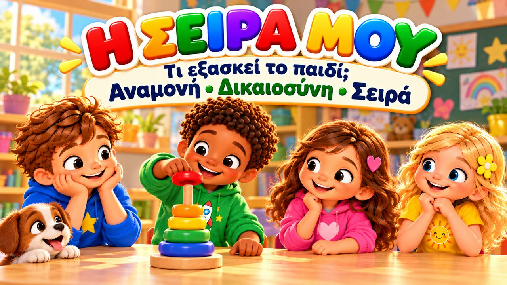
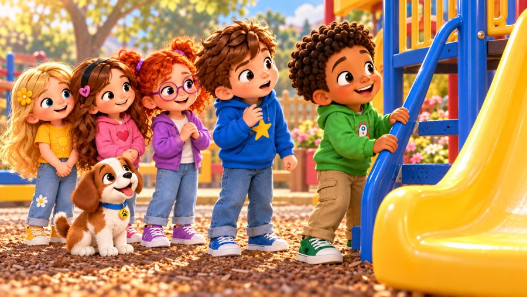
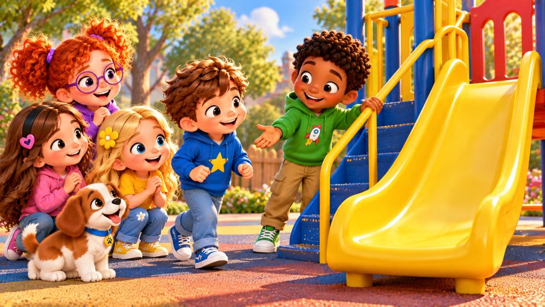
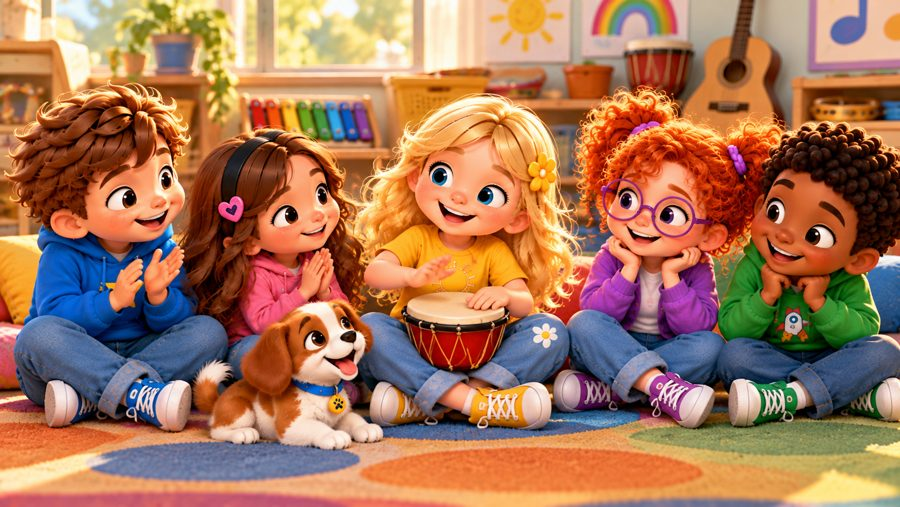
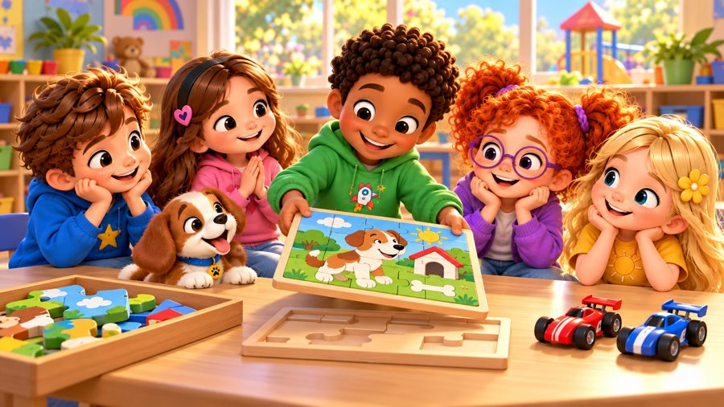
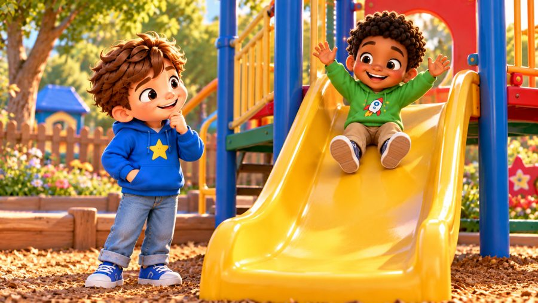

Η Σειρά Σου, Η Σειρά Μου
Ένα τραγούδι για τη σειρά, την υπομονή και τις δίκαιες επιλογές, για παιδιά και τους μεγάλους τους.
Δραστηριότητες, ζωγραφιές, κουίζ και πτυχίο συμμετοχής θα είναι διαθέσιμα μαζί με το βίντεο.

▶💡 Γιατί είναι σημαντικό: Σειρά & Υπομονή
Το να περιμένουμε τη σειρά μας μαθαίνει υπομονή, δικαιοσύνη και αυτοέλεγχο — δεξιότητες που τα παιδιά χρειάζονται σε κάθε παιχνίδι, κουβέντα και τάξη. Η αναμονή είναι δύσκολη για τα μικρά παιδιά, γι’ αυτό βοηθά να είναι στην αρχή σύντομη και ορατή. Παίξτε στο σπίτι απλά παιχνίδια με σειρά και λέτε δυνατά: «Πρώτα εσύ, μετά εγώ».
👨👩👧 Τι μαθαίνει το παιδί
- Περιμένω, κοιτάζω και ενθαρρύνω
- Ζητώ ευγενικά τη σειρά μου
- Διαλέγουμε εναλλάξ
💬 Κουβέντα μετά το τραγούδι
- Τι μπορείς να κάνεις όσο περιμένεις;
- Πώς ζητάς ευγενικά τη σειρά σου;
- Πώς διαλέγουν παιχνίδι και οι δύο φίλοι;
🏅 Κουίζ & Πτυχίο
Είδατε το τραγούδι μαζί; Τώρα διαβάστε στο παιδί κάθε ερώτηση — το παιδί δείχνει τη σωστή εικόνα. Αν απαντήσει και στις 6 ερωτήσεις, κερδίζει ένα πτυχίο για εκτύπωση!
🔒 Το όνομα χρησιμοποιείται μόνο για να φτιαχτεί το πτυχίο στη συσκευή σας. Δεν αποθηκεύουμε και δεν στέλνουμε τίποτα.
Τα κατάφερες! 🎉
Και οι 6 απαντήσεις είναι σωστές! Γράψτε το όνομα του παιδιού για να φτιαχτεί το πτυχίο.
🖨️ Δωρεάν εκτυπώσιμα
Δωρεάν για χρήση στο σπίτι και στην τάξη. Εκτυπώστε σε χαρτί Α4.
🖼️ Σκηνές από το τραγούδι






🎵 Κι άλλα τραγούδια


🎤 Στίχοι – Η Σειρά Σου, Η Σειρά Μου
[Chorus Hook - Start]
Η σειρά σου!
Η σειρά μου!
Παίζουμε όμορφα
εγώ κι εσύ!
Πρώτα εσύ,
μετά εγώ...
Και στο παιχνίδι
χωράμε κι οι δυο!
[Intro]
Η σειρά σου...
Η σειρά μου...
Μια φορά εσύ.
Μια φορά εγώ.
Και όλα μια χαρά!
[Verse 1]
Ο Μαξ έτρεξε στην τσουλήθρα,
μα ο Τζέι περίμενε μπροστά.
«Θέλω πρώτος!»
πήγε να φωνάξει...
μα σταμάτησε ξανά.
Ο Τζέι ανέβηκε ψηλά,
κατέβηκε με μια χαρά:
«Γιούχου!»
Κι ο Μαξ τον κοίταξε
και γέλασε κι αυτός.
Μετά ο Τζέι του φώναξε:
«Τώρα είναι η σειρά σου, Μαξ!»
Κι εκείνος ανέβηκε γρήγορα:
«ΓΙΟΥΧΟΥ!
Τώρα πάω εγώ!»
[Pre-Chorus]
Μπορώ να περιμένω,
η σειρά μου θα 'ρθει.
Και όσο περιμένω,
η χαρά δεν θα χαθεί.
Πρώτα εσύ,
μετά εγώ...
υπάρχει σειρά
και για τους δυο!
[Chorus]
Η σειρά σου!
Η σειρά μου!
Παίζουμε όμορφα
εγώ κι εσύ!
Πρώτα εσύ,
μετά εγώ...
Και στο παιχνίδι
χωράμε κι οι δυο!
Η σειρά σου!
Η σειρά μου!
Περιμένω
και δεν βιάζομαι εγώ.
Όταν τελειώσεις
με τη δική σου σειρά...
θα έρθει και η δική μου
μετά!
[Verse 2]
Η Ρόζι είχε ένα τυμπανάκι,
τακ-τακ-τακ έκανε ρυθμό.
Η Λίλι ήρθε και της είπε:
«Μπορώ να παίξω κι εγώ;»
Η Ρόζι είπε:
«Φυσικά!
Μόλις τελειώσω εγώ.»
Τακ-τακ-τακ,
κι ύστερα σταμάτησε.
«Τώρα πάρε το εσύ!»
Η Λίλι έπαιξε δυνατό ρυθμό,
κι όλοι χτύπησαν παλαμάκια στο λεπτό.
Μια φορά η Ρόζι,
μια φορά η Λίλι...
κι έτσι χαίρονταν όλοι οι φίλοι!
[Pre-Chorus]
Μπορώ να περιμένω,
η σειρά μου θα 'ρθει.
Και όσο περιμένω,
η χαρά δεν θα χαθεί.
Πρώτα εσύ,
μετά εγώ...
υπάρχει σειρά
και για τους δυο!
[Chorus]
Η σειρά σου!
Η σειρά μου!
Παίζουμε όμορφα
εγώ κι εσύ!
Πρώτα εσύ,
μετά εγώ...
Και στο παιχνίδι
χωράμε κι οι δυο!
Η σειρά σου!
Η σειρά μου!
Περιμένω
και δεν βιάζομαι εγώ.
Όταν τελειώσεις
με τη δική σου σειρά...
θα έρθει και η δική μου
μετά!
[Verse 3]
Η Μία κι ο Τζέι είχαν ένα παιχνίδι,
μα ήθελαν να διαλέξουν κι οι δυο.
«Εγώ θα διαλέξω!»
«Κι εγώ θέλω!»
Και σταμάτησαν στο λεπτό.
Η Μία είπε:
«Ας πάρουμε σειρά.
Πρώτα διάλεξε εσύ,
κι ύστερα εγώ μετά.»
Ο Τζέι διάλεξε ένα παζλ,
η Μία έναν αγώνα μετά.
Δυο διαφορετικές επιλογές...
και πέρασαν τέλεια τελικά!
[Bridge - Call and Response]
Κάποιος παίζει τώρα;
ΠΕΡΙΜΕΝΩ!
Ποιανού είναι η σειρά;
Η ΔΙΚΗ ΣΟΥ!
Και μετά;
Η ΔΙΚΗ ΜΟΥ!
Χρειάζεται να αρπάξω;
ΟΧΙ!
Χρειάζεται να φωνάξω;
ΟΧΙ!
Μπορώ να ρωτήσω πότε είναι η σειρά μου;
ΝΑΙ!
Μπορούμε να χαρούμε κι οι δυο;
ΝΑΙ!
Τι κάνουμε λοιπόν;
ΠΑΙΡΝΟΥΜΕ ΣΕΙΡΑ!
[Break]
Όταν περιμένω τη σειρά μου,
δεν σημαίνει πως χάνω το παιχνίδι.
Μπορώ να κοιτάζω.
Μπορώ να χειροκροτώ.
Μπορώ να σκέφτομαι
τι θα κάνω μετά.
Και κάθε στιγμή που περνά...
η σειρά μου
έρχεται πιο κοντά!
[Final Chorus]
Η σειρά σου!
Η σειρά μου!
Παίζουμε όμορφα
εγώ κι εσύ!
Πρώτα εσύ,
μετά εγώ...
Και στο παιχνίδι
χωράμε κι οι δυο!
Τσουλήθρα!
Τύμπανο!
Παιχνίδι!
Μπάλα!
Παίρνουμε σειρά
και περνάμε μια χαρά!
Περιμένω!
Χαμογελώ!
Και ξέρω πως
σε λίγο πάω εγώ!
Μια φορά εσύ!
Μια φορά εγώ!
Κι έτσι είναι δίκαιο
και για τους δυο!
Η σειρά σου!
Η σειρά μου!
Όλοι βρίσκουμε σειρά
μέσα στην παρέα μας!
[Outro]
Πρώτα εσύ...
μετά εγώ...
λίγη υπομονή...
και παίζουμε κι οι δυο!
Η σειρά σου...
η σειρά μου!
Δημιουργική παραγωγή με τη βοήθεια AI.